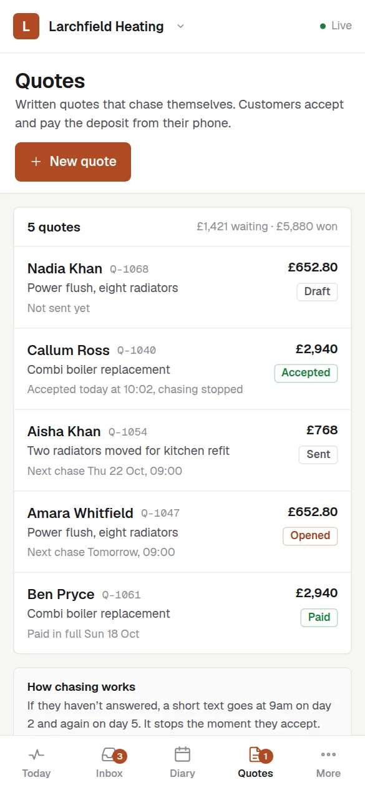
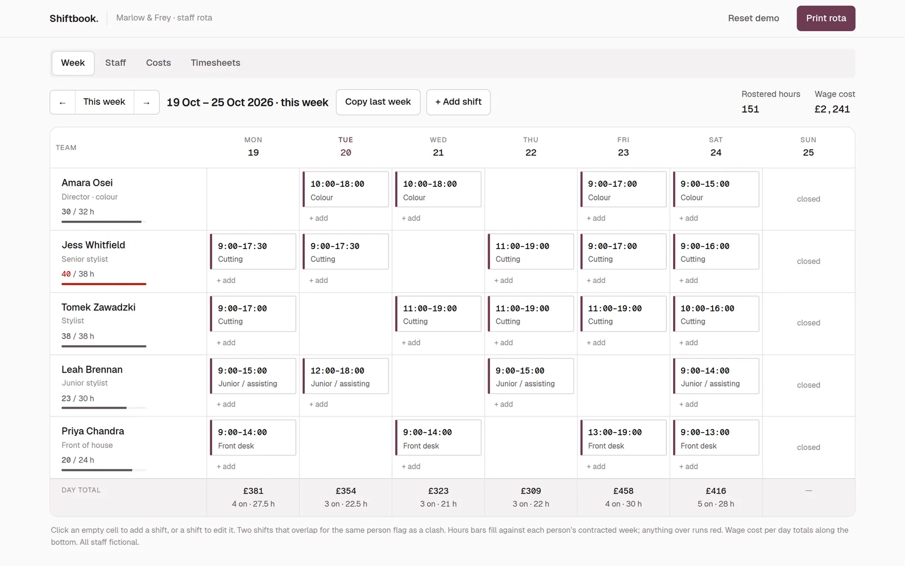
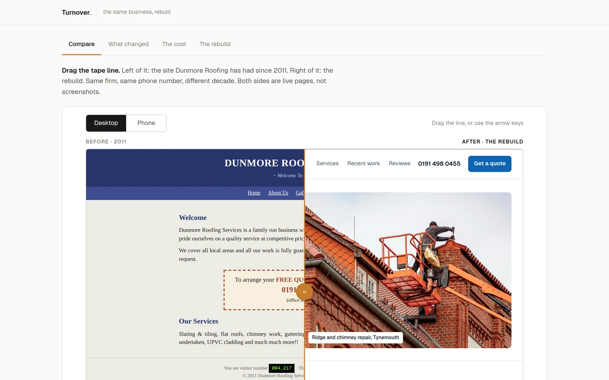
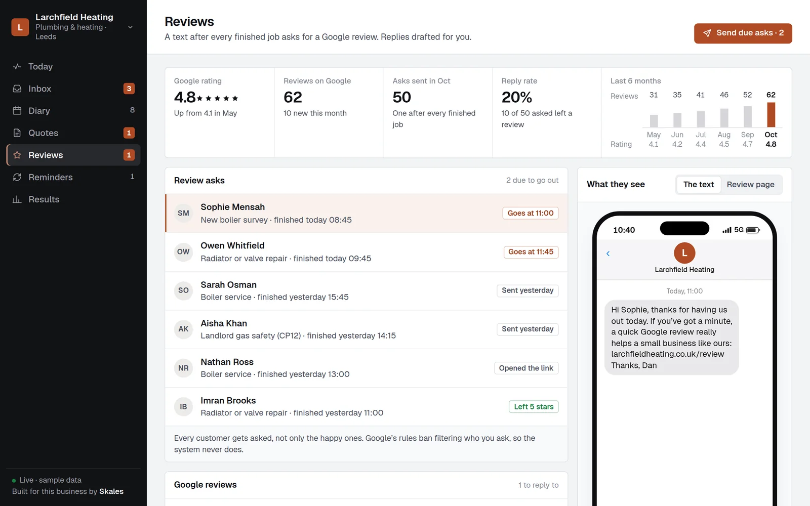
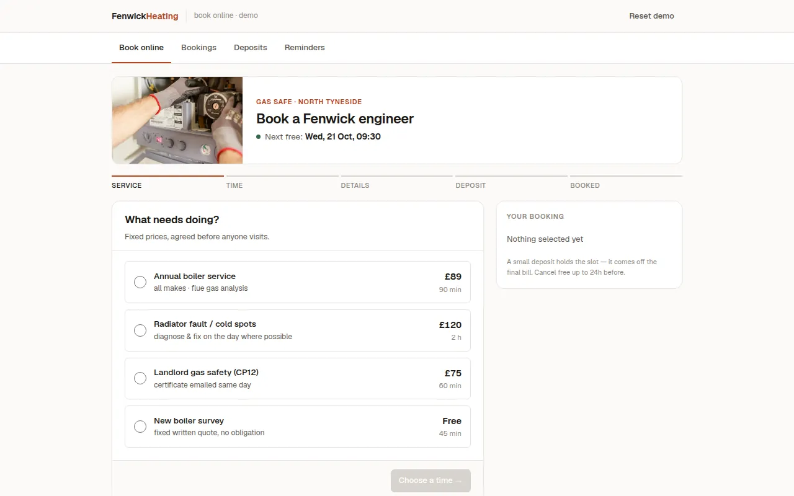

Gardens quoted before the spring rush buries you.
A landscaper’s website needs before and after photos of real gardens, a page for each kind of job from patios and turf to fencing, and an enquiry form that takes photos so you can price some jobs before driving out. It also needs a system that keeps up in spring, when enquiries arrive faster than you can visit, and reminds customers about the jobs that come round each year.

What should a website for landscapers and fencers do?
- Before and after photos of your own gardens, grouped by job: patios, decking, turf, planting and fencing.
- A fencing page of its own, with a quick way to report panels or posts down after a storm.
- An enquiry form that takes photos and rough measurements, so some jobs can be priced before a visit.
- How far ahead you are booked, kept up to date, so nobody is surprised by the wait.
- Maintenance contracts and seasonal work set out separately from one-off projects.
How do customers choose a landscaper?
Garden work is seasonal. Enquiries pile up in spring, when everyone looks out of the window at once, and dry up in winter, apart from fences that come down in the wind. Customers pick the firm whose finished gardens look like the one they want, and work leaks when quotes go out late or never get followed up, and when last year’s customers are never asked about this year.
The three automations that matter most
Quote chasing
In spring the quotes go out in batches, and the chaser makes sure none of them is forgotten while you are laying the next patio.
How it worksService reminders
Hedge cutting, fence treatment and the patio clean come round again, and a reminder fills the quieter months with work you have already done once.
How it worksReview requests
A finished garden looks its best the day you leave, which makes that the day to ask for the review.
How it worksTry it as a landscaper
The live demos, set up for landscapers and fencers with a made-up business. You play the customer, then see what you would see.
Builds that fit
Working builds for made-up businesses. Open any of them on your phone and use it.

Quotes that chase themselvesQuotes from your price list that chase themselves until the customer answers.The system · six made-up businesses
The systemOne screen: every call caught, every job booked, and what still needs you.The system · six made-up businesses
Google reviewsEvery finished job asks for a review. Replies take one tap.The system · six made-up businesses
Inbox and missed callsEvery call, text and form in one list. Missed calls get a text back in seconds.The system · six made-up businessesLandscapers and fencers: questions people ask
How do I keep up with enquiries in spring?
Every enquiry lands on one board with its photos, so you can price the simple ones from the van and book visits for the rest. Quotes that go quiet are chased for you.
Should fencing have its own page?
Yes. Fencing is a different search from landscaping and often urgent after a storm, so a page that says you do it, with photos and a quick enquiry form, is what gets found.
Can the website take photos from customers?
Yes. The enquiry form takes photos straight from the customer’s phone, and they arrive on the job card with the address and the notes.
More in every question, answered.